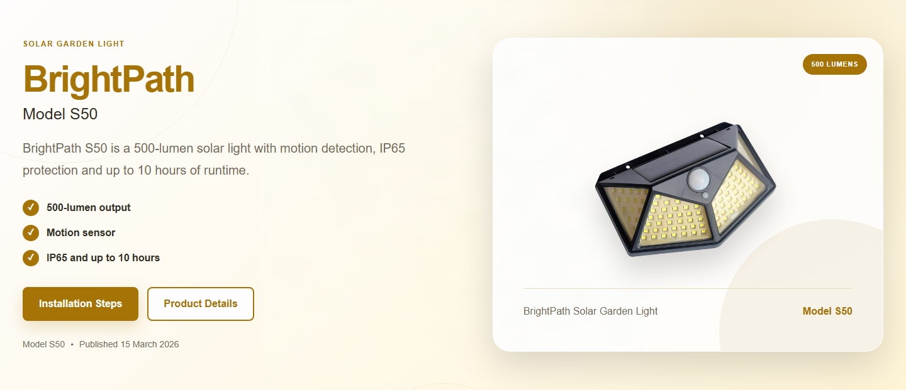
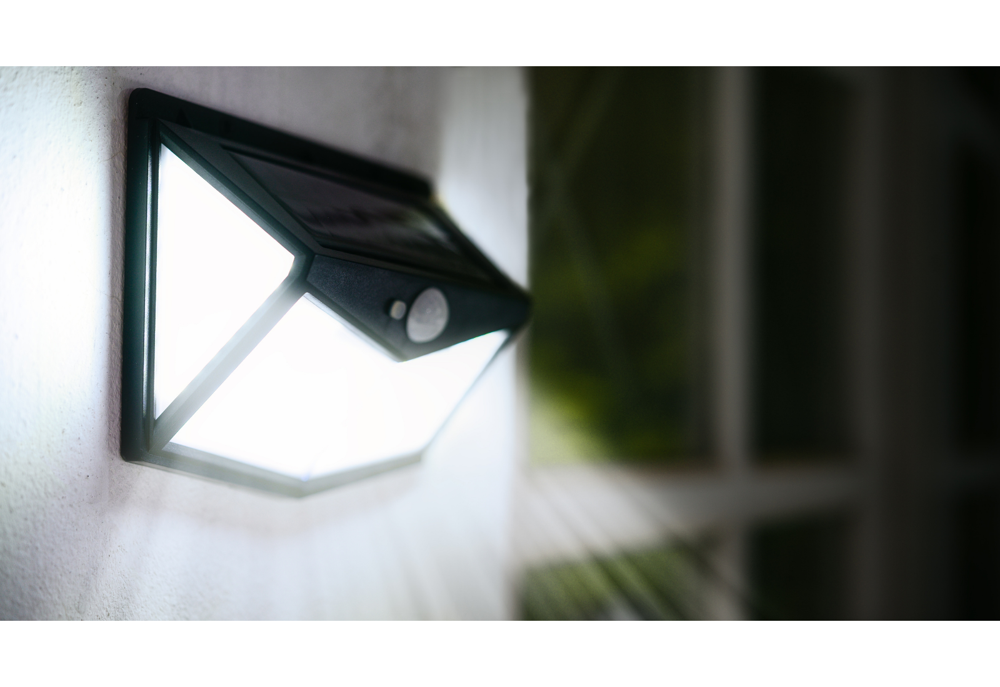

500 lumens
Illuminate the intended path or garden area.

Credentials applied with: Adobe Content Authenticity
Asset type: PNG image with embedded Content Credentials
Credential location: Embedded in the asset file
Last verification: Passed on 19/11/2026 using Content Credentials Verify
Verify Content CredentialsCredentials applied with: Adobe Content Authenticity
Asset type: PNG image with embedded Content Credentials
Credential location: Embedded in the asset file
Last verification: Passed on 19/11/2026 using Content Credentials Verify
Verify Content CredentialsOutdoor installation
BrightPath S50 provides solar-powered, motion-activated garden lighting.
Choose firm ground where the solar panel receives open daylight.
Secure the stake, aim the sensor, charge the light and test it after dark.
Product highlights
BrightPath S50 combines light output, motion detection, outdoor protection and solar runtime.
Illuminate the intended path or garden area.
Aim the sensor toward approaching movement.
Use outdoors without submerging the light.
Runtime depends on charging and use.
Keep the panel clean and unshaded.

Installation
Place the light in firm, unshaded ground and test it after dark.
Avoid persistent shade.
Insert it into firm soil.
Check the sensor and beam.
Installation
Secure, aim, charge and test the solar light.
Product details
Key information for BrightPath S50.

| Product name | BrightPath |
|---|---|
| Model | S50 |
| Category | Solar garden light |
| Output | 500 lumens |
| Sensor | Motion sensor |
| Rating | IP65 |
| Runtime | Up to 10 hours |
| Power | Solar |
| Installation | Firm soil |
| Panel position | Open daylight |
| Testing | After dark |
| Water | Do not submerge |
| Product code | SW-S50-2026 |
Short explanation
Select, secure, aim and test the light.
Choose firm, unshaded ground.
Insert the assembled stake into the soil.
Point the panel and sensor correctly.
Charge the light and test it after dark.
Important information
Install and maintain the light carefully.
Clean the panel and check the stake and sensor.
Questions and Answers
Find short answers about BrightPath S50.
It is a 500-lumen solar garden light with motion detection.
Install it in firm, unshaded soil.
Charge it and walk through the sensor area after dark.
Runtime is up to 10 hours.
Yes, it has an IP65 rating.
No, do not submerge the light.